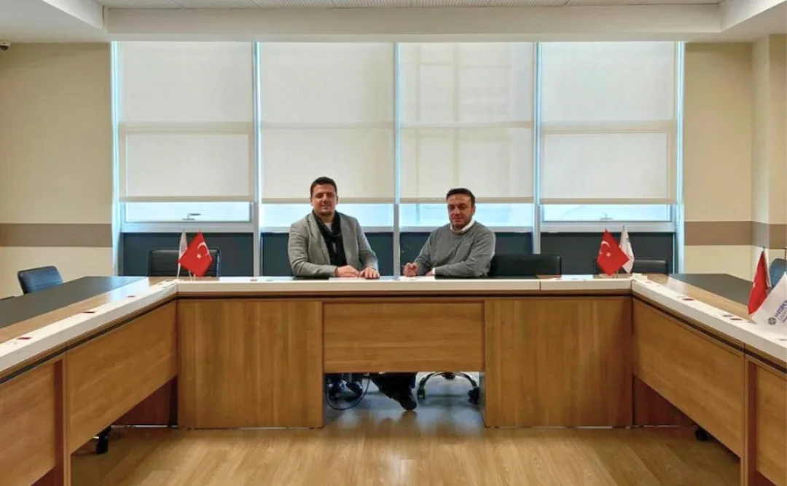

Yasin Yavuz, DESİL ile Uluslararası Dijital Girişimcilik Derneği Arasında İş Birliği Sözleşmesi İmzaladı

Yasin Yavuz, başkanlığını yürüttüğü Dijital Sürdürülebilir Liderlik Derneği (DESİL) ile Uluslararası Dijital Girişimcilik Derneği (UDGD) arasında, iki kurumun ortak çalışmalarını kapsayan iş birliği sözleşmesini imzaladı.
Sözleşme, DESİL adına Yasin Yavuz, UDGD adına ise Dernek Başkanı Faik Tanrıkulu tarafından imza altına alındı.
İmzalanan iş birliği protokolü; dijital girişimcilik, sürdürülebilirlik ve liderlik alanlarında ortak projelerin geliştirilmesini, etkinlikler düzenlenmesini ve kurumsal iş birliklerinin güçlendirilmesini hedefliyor. Taraflar, ortak faaliyetlerin planlanması ve yürütülmesinde koordinasyon ve bilgi paylaşımına öncelik verileceğini vurguladı.
Bu anlaşma, iki dernek arasındaki ilişkilerin kurumsallaşması ve ortak vizyonun somut projelere dönüştürülmesi açısından önemli bir adım olarak değerlendiriliyor. Yapılacak ortak çalışmaların ilerleyen süreçte kamuoyu ve ilgili paydaşlarla paylaşılması planlanıyor.